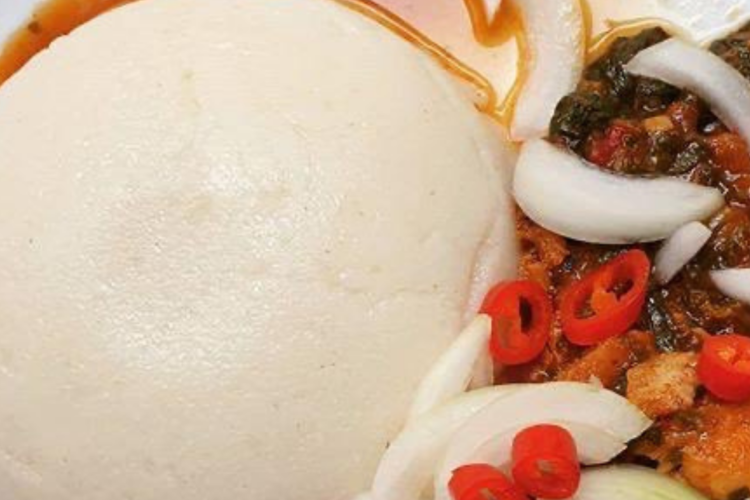

Akoume

Togolese Akoume is one of the typical dishes of Togo that you absolutely have to taste.
It is still called Makoumé or Emakoumé. It is the staple food of Togolese.
Some even call it corn fufu.
This tasty Togolese dish consists of delicious flour dumplings. Made from corn "dough",
akoume is eaten with most sauces based on smoked fish, crabs or shrimps.
Ingredients:
- 450g fermented corn flour
- 120g cassava flour
- 600ml water
- 1 teaspoon of salt
Steps
- In a bowl, put the flours,
and pour little by little 3/4 l of boiling water until you have a homogeneous paste.
- Put this paste in a pot, over low heat, and gradually pour in the rest of the boiling water,
while continuing to turn,
so that the paste does not stick to the bottom of the pan and does not make lumps.
- Add a little boiling water if the dough is too hard.
Keep stirring until you get a thick paste. Add boiling water if needed.
- Cooking is complete when the dough comes away from the edges of the pan.
- Mold portions with your hands and serve on each plate.
Enjoy your food!!
HOME